new
3 kandidatennew, filenew, fileplus, fileplus2
new, filenew, fileplus, fileplus2
open, openfile, folderopen, folder_open, toolbarbuttonopenfile
save, saveall
import, fileinput, cuiimport
export, fileexport, cuiexport
undo, undo2
redo, redo2
settings, preferences, tboutlinesettings
close, x, tboutlinex
minimize, minimize2
maximize, maximize2
panelleft, sidebartoggle, toolbarbuttonsidebartoggle
panelright, panelrightopen, panelrightclose
search, find, toolbarbuttonsearch
measure
fit, fitpage, fitwidth, zoomext
fitselection, fit_selection, frameselection
zoomin, zoom_in
zoomout, zoom_out
pan
cube
extensions, plugin, puzzle
help, circlehelp
back
check, tboutlinecheck
grid, grid2x2, layoutgrid
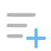
add_scaleOpenCADStudio · ui-assetalign_bottomOpenCADStudio · ui-assetalign_hcenterOpenCADStudio · ui-assetalign_leftOpenCADStudio · ui-assetalign_rightOpenCADStudio · ui-assetalign_topOpenCADStudio · ui-assetalign_vcenterOpenCADStudio · ui-assetarc_3pOpenCADStudio · ui-assetarc_contOpenCADStudio · ui-assetarc_csaOpenCADStudio · ui-assetarc_cseOpenCADStudio · ui-assetarc_cslOpenCADStudio · ui-assetarc_scaOpenCADStudio · ui-assetarc_sceOpenCADStudio · ui-assetarc_sclOpenCADStudio · ui-assetarc_seaOpenCADStudio · ui-assetarc_sedOpenCADStudio · ui-assetarc_serOpenCADStudio · ui-asset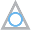
circle_tttOpenCADStudio · ui-assetclear_toolOpenCADStudio · ui-assetcolor_paletteOpenCADStudio · ui-asset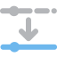
laymatchOpenCADStudio · ui-assetlaymcurOpenCADStudio · ui-assetlayoffOpenCADStudio · ui-assetlayonOpenCADStudio · ui-assetlaythwOpenCADStudio · ui-assetlayulkOpenCADStudio · ui-assetlayunisoOpenCADStudio · ui-assetlayvpfrzOpenCADStudio · ui-assetlayvpthwOpenCADStudio · ui-assetpanelOpenCADStudio · ui-assetlayout_tabsOpenCADStudio · ui-assetleaderOpenCADStudio · ui-assetlineOpenCADStudio · ui-assetmatch_propOpenCADStudio · ui-assetmirrorOpenCADStudio · ui-assetmleaderOpenCADStudio · ui-asset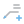
mleader_addOpenCADStudio · ui-assetmleader_alignOpenCADStudio · ui-assetmleader_collectOpenCADStudio · ui-assetmleader_removeOpenCADStudio · ui-asset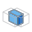
intersectOpenCADStudio · ui-assetloftOpenCADStudio · ui-assetpolysolidOpenCADStudio · ui-assetpresspullOpenCADStudio · ui-assetpyramidOpenCADStudio · ui-assetrevolveOpenCADStudio · ui-assetshellOpenCADStudio · ui-asset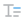
mtextOpenCADStudio · ui-assetmultipointOpenCADStudio · ui-assetoffsetOpenCADStudio · ui-assetoptions_toolOpenCADStudio · ui-assetorbitOpenCADStudio · ui-assetorthoOpenCADStudio · ui-assetapparentOpenCADStudio · ui-assetcenterOpenCADStudio · ui-assetendpointOpenCADStudio · ui-assetextensionOpenCADStudio · ui-assetgeometric_centerOpenCADStudio · ui-assetinsertionOpenCADStudio · ui-assetintersectionOpenCADStudio · ui-assetmidpointOpenCADStudio · ui-assetmtpOpenCADStudio · ui-assetnearestOpenCADStudio · ui-assetnodeOpenCADStudio · ui-assetparallelOpenCADStudio · ui-assetperpendicularOpenCADStudio · ui-assetquadrantOpenCADStudio · ui-assettangentOpenCADStudio · ui-assetoverkillOpenCADStudio · ui-assetpagesetupOpenCADStudio · ui-assetpasteOpenCADStudio · ui-assetpc_attachOpenCADStudio · ui-assetperspOpenCADStudio · ui-assetplotOpenCADStudio · ui-asset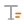
annotation_textopen-pointcloud-studio · ui-assetbrowser_bcfopen-pointcloud-studio · ui-assetbrowser_classesopen-pointcloud-studio · ui-assetbrowser_duplicateopen-pointcloud-studio · ui-assetbrowser_elevationopen-pointcloud-studio · ui-assetbrowser_fileopen-pointcloud-studio · ui-assetbrowser_lockedopen-pointcloud-studio · ui-assetbrowser_modelopen-pointcloud-studio · ui-assetbrowser_planopen-pointcloud-studio · ui-assetbrowser_renameopen-pointcloud-studio · ui-assetbrowser_saved_viewopen-pointcloud-studio · ui-assetbrowser_scanopen-pointcloud-studio · ui-assetbrowser_sectionopen-pointcloud-studio · ui-assetbrowser_sheetopen-pointcloud-studio · ui-assetbrowser_unlockedopen-pointcloud-studio · ui-assetbrowser_updateopen-pointcloud-studio · ui-assetbrowser_viewsopen-pointcloud-studio · ui-assetchevron_closedopen-pointcloud-studio · ui-assetchevron_openopen-pointcloud-studio · ui-assetclosed_meshopen-pointcloud-studio · ui-assetdelete_pointsopen-pointcloud-studio · ui-assetdetect_facesopen-pointcloud-studio · ui-assetfolder_scansopen-pointcloud-studio · ui-assetmeasure_areaopen-pointcloud-studio · ui-assetmeasure_distanceopen-pointcloud-studio · ui-assetmesh_pointcloudopen-pointcloud-studio · ui-assetmesh_surfaceopen-pointcloud-studio · ui-assetmesh_terrainopen-pointcloud-studio · ui-assetmesh_to_plansopen-pointcloud-studio · ui-asset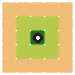
iconpyrevit-gis2bim · ui-asset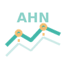
iconpyrevit-gis2bim · ui-asset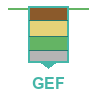
iconpyrevit-gis2bim · ui-asseticonpyrevit-gis2bim · ui-asset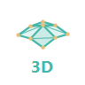
iconpyrevit-gis2bim · ui-asset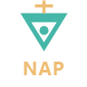
iconpyrevit-gis2bim · ui-asset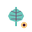
iconpyrevit-gis2bim · ui-asseticonpyrevit-gis2bim · ui-asseticonpyrevit-gis2bim · ui-asseticonpyrevit-gis2bim · ui-asset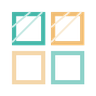
iconpyrevit-gis2bim · ui-asset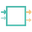
iconpyrevit-gis2bim · ui-asseticonpyrevit-gis2bim · ui-asseticonpyrevit-gis2bim · ui-asset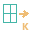
iconpyrevit-gis2bim · ui-asset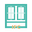
iconpyrevit-gis2bim · ui-asset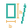
iconpyrevit-gis2bim · ui-asset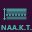
iconpyrevit-gis2bim · ui-asset